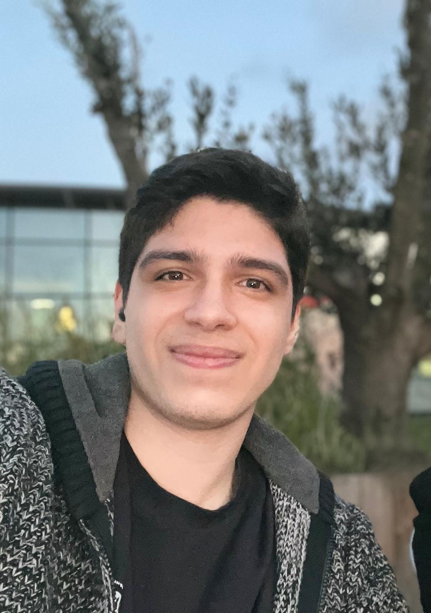

Muhammed Taha Şen

Web Developer | Cloud Engineer
Improve your portfolio with modern and impressive websites, earn more income and open up to the world by being more professional in your work. At the same time, store your data more cost-effectively and keep it more secure with cloud technologies.
About Me
- Hello! I'm Muhammed Taha Şen, a computer engineer specializing in web developer/cloud engineer. My passion for technology drives me to continuously learn and develop innovative solutions.
- I graduated from Halic University with a degree in and currently work as a CEO at Shen Corporation. I focus on web development , cloud computing, backend development, data analysis, aiming to build modern and scalable solutions.
- I work with technologies such as AWS, Java, and React, developing cloud-based systems and data management solutions. I enjoy contributing to open-source projects and sharing knowledge with the tech community.
- With a strong analytical mindset, problem-solving skills, and a collaborative approach, I am committed to leveraging technology to create efficient and impactful solutions.
If you're interested in working with me or discussing new projects, feel free to reach out! 🚀
Skills
Technical Skills
- Programming Languages: Java, Python, JavaScript
- Web Development: React, HTML, CSS, Tailwind CSS
- Cloud Computing: AWS (EC2, S3, Lambda, CloudFormation)
- Database Management: MySQL, PostgreSQL, MongoDB
- Version Control: Git, GitHub
- Software Development: Object-Oriented Programming (OOP), Design Patterns
- Tools & Platforms: Docker, Kubernetes, Linux
Soft Skills
- Problem-Solving & Analytical Thinking
- Teamwork & Collaboration
- Effective Communication
- Time Management & Adaptability
- Critical Thinking
Contact Me